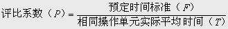

常用评比方法
国际上时间研究的专家们创造了不同的评定方法，主要有以下几种：
(一)速度评定法
速度评定法亦称速度评比法或测速，是以合格工人的正常作业为标准，判定工人实际作业的速度，以百分率的方式确定系数，用评定系数调整观测作业时间的一种方法。速度评定的等级和判断标准划分可根据需要和实际情况确定，速度评定的百分率可根据需要分若干等级。
(二)平准化法
平准化法(Leveling)又称西屋法(Westing house system)，为美国西屋电气公司所首创，后来又由劳雷(Lowry)、曼纳特(Maynard)和斯太基门德(Stegemerten)完成整个体系。这种法应用最广泛，它将熟练、努力、工作环境和一致性四者作为衡量工作的主要评比因素，每个评比因素再分为超佳(或理想)、优良、平均、可、欠佳六个高低程度的等级，给定相应的系数。评定时，根据因素及其等级，对操作单元进行评定。
(三)客观评比
在速度评比中，只是靠“正常速度”的概念来衡量，而平准化法将影响工作的因素分为四种，每一因素又用六个等级来衡量。这两种方法都靠时间研究人员的主观判断进行衡量。为了尽可能减少
观测人员的主观因素对评比的影响，门达尔(Mundel)博士创建了“客观评比法(Objective Rating)”。
客观评比法将评比分为两大步骤：
(1)将某一操作观测的速度同标准速度、正常速度相比较，确定两者适当的比率，作为第一个调整系数。
(2)利用“工作难度调整系数”作为第二个调整系数再加以调整。
操作单元的正常时间为：
正常时间 = 实际单元的平均值×速度标准评比系数×工作难度调整系数
(四)合成评比
速度评比、平准化法和客观评比，都不同程度地带有观测人员的主观判断，莫罗(R.L.Morrow)为了克服此困难，创立了合成评比法(Synthetic Leveliving)。该方法将操作单元的实测时间与预定时间相比较，得到该操作的比较系数，再取其平均系数，作为该观测周期中所有单元的评比系数，其公式为：
